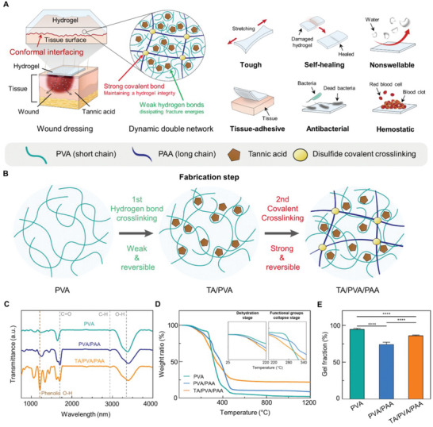

이 연구가 다루는 문제
움직이는 젖은 조직에 밀착하도록 탄닌산과 고분자 네트워크를 결합한 상처용 하이드로젤 패치입니다. 돼지 피부에서의 접착, 세균 배양에서의 항균 반응, 생쥐 간 손상 모델에서의 급성 지혈을 각각 평가했습니다.
연구가 시작된 배경
젖어 있고 움직이는 상처에 붙이는 패치는 조직의 변형을 따라가면서 접촉을 유지해야 합니다. 움직임을 충분히 수용하지 못하면 패치 내부나 조직과 맞닿은 경계에 힘이 집중될 수 있습니다. 이 연구는 유연성과 에너지 소산 능력에 지혈·항균 기능을 함께 더했습니다.
어떻게 접근했나요?
탄닌산(TA)/PVA/PAA 네트워크의 가역적인 결합은 힘을 받을 때 풀렸다가 다시 형성되어 에너지를 분산하고 회복을 돕습니다. 조직에 붙는 기능에는 별도의 표면 활성화가 사용됩니다. 겔 내부의 회복과 젖은 조직에 대한 접착은 각각 근거를 살펴봐야 합니다.

상처 피복용 TA/PVA/PAA 하이드로젤의 이중 네트워크 설계, 제작 단계와 재료 분석입니다.
Jae Park, Tae Young Kim, Yeonju Kim 외. “A Mechanically Resilient and Tissue‐Conformable Hydrogel with Hemostatic and Antibacterial Capabilities for Wound Care”. Figure 1. DOI: 10.1002/advs.202303651. CC BY 4.0. 그림 내용은 변경하지 않았습니다.
무엇을 어떻게 평가했나요?
기계적 시험, 돼지 피부 접촉, 세균 배양, 생쥐 실험은 서로 다른 기능을 평가합니다. 피부 시험은 움직임 중 접촉을, 간 손상 시험은 급성 출혈을, 피하 이식은 조직 반응을 살펴봅니다. 배양 환경의 항균 활성을 감염 상처 치료로 해석하거나, 이 결과들을 하나의 포괄적인 치유 효과로 합쳐서는 안 됩니다.
주요 결과
생쥐 간 손상 모델에서 패치는 무처리군과 PVA 대조군보다 출혈량을 줄였습니다. PVA 대조군은 더 단순한 고분자 재료와 비교할 수 있게 합니다. 이 결과는 해당 모델의 급성 지혈을 뒷받침하지만, 접착·형상 적합성·생물학적 상호작용이 각각 얼마나 기여했는지는 분리해 보여 주지 않습니다.
아직 남아 있는 질문
급성 출혈 억제와 단기 이식 결과만으로 장기 치유나 조직 재생을 판단할 수는 없습니다. 비교할 때는 활성화 방식, 접촉 압력, 손상 조건을 맞춰야 합니다. 세균 배양에서의 항균 활성과 감염된 상처의 치유도 구분해야 합니다.
함께 읽을 연구
Tough adhesives for diverse wet surfaces
DOI: 10.1126/science.aah6362 ↗
Li 등의 초록은 조직 표면의 결합과 접착제 내부의 에너지 소산을 구분합니다. TA 함유 패치는 네트워크에 지혈·항균 기능을 더합니다.
재료와 접착 시험 조건이 다르며, 접착 에너지와 출혈이 멎는 시간은 서로 다른 결과를 나타냅니다.
초록을 참고한 소개RESEARCH NEWS
연구 소식
미확인 후보와 접근 제한 (1)
해설에 사용한 자료
이 해설은 논문 본문과 원그림을 참고합니다. 보충자료 전체와 원자료의 별도 검토는 완료하지 않았습니다.